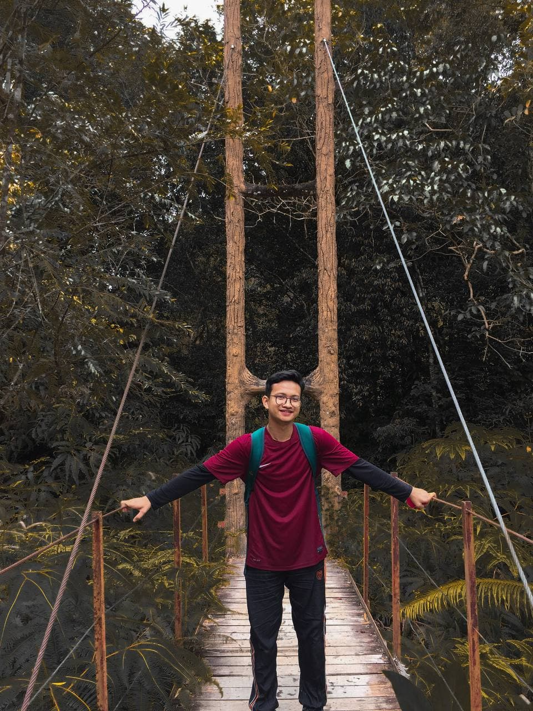

MUHAMMAD IQBAL AFIQ BIN AHMAD NIZAM
My Gallery
I like to travel,and take a picture as a memory that i can remember in future
1/3
2/3
3/3
My Interest
Sometimes I like to try a new thing when I have a freetime at house , for me I cannot static do a one thing I should try many things that i have not explore yet

HOBBY
I love to ride, but for now I need to stay at home because of our pandemic cases was very bad right now so our goverment need to make MCO to prevent it from spread widely ,dangerous for myself, family and also for others , just patient one day In shaa Allah Malaysia will free from it.
FOOD
I like to try many type of food ,when my friend invite me to hangouts anywhere , i like to join them
1/3

2/3

3/3

PETS
I also very love with pets ,especially cats ,for now I have one,, in future when I have my own house, I want to have more ,for me cat is like our buddies we can share our feelings and also see them growing up day by day for me its an amazing things
1/2

2/2

Favourite Colour
I really like blue,green and black , for me blue colour is very calm and also green because i really love nature and view of forest
Favourite City
I really like Puncak Alam because im growing here with my friends, and also i can found many delicious food here because in our city there are various of people that come from different states such as Kelantan,Sarawak and others
Favourite Movie
I'm not a movie lover or weebs like my friend,I like when my friend suggest me to watch many story , drama and anime , but for me if I am really boring then i will watch it, but the movie that never make me feel bored , this is my own oppinion , i like to watch Naruto The Last üòÇ